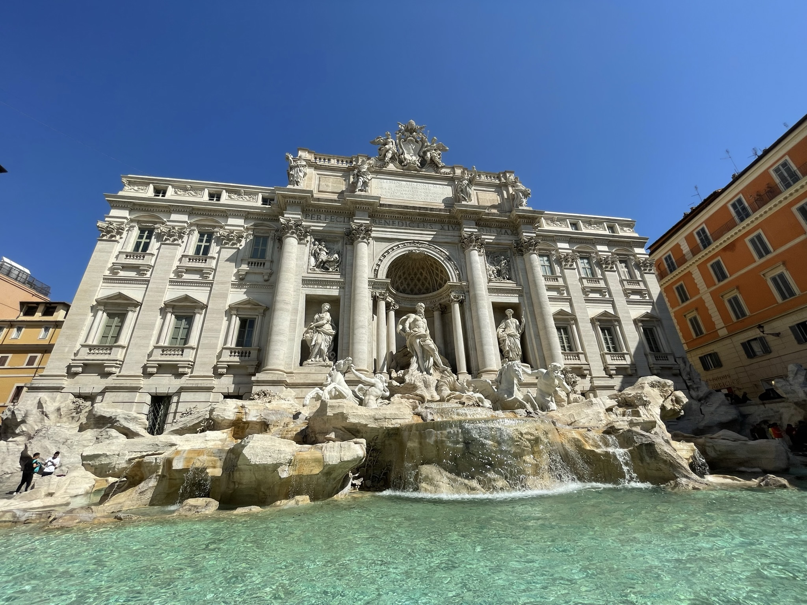
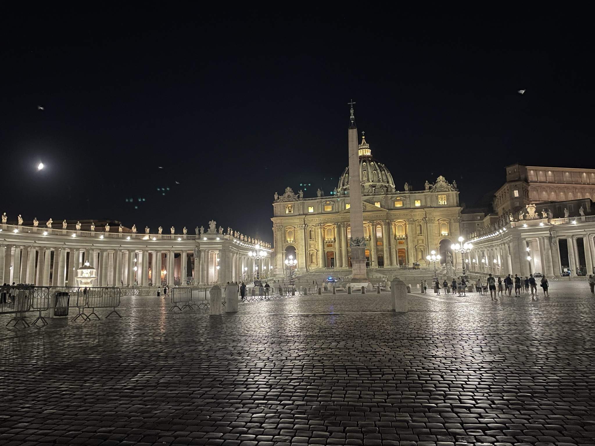
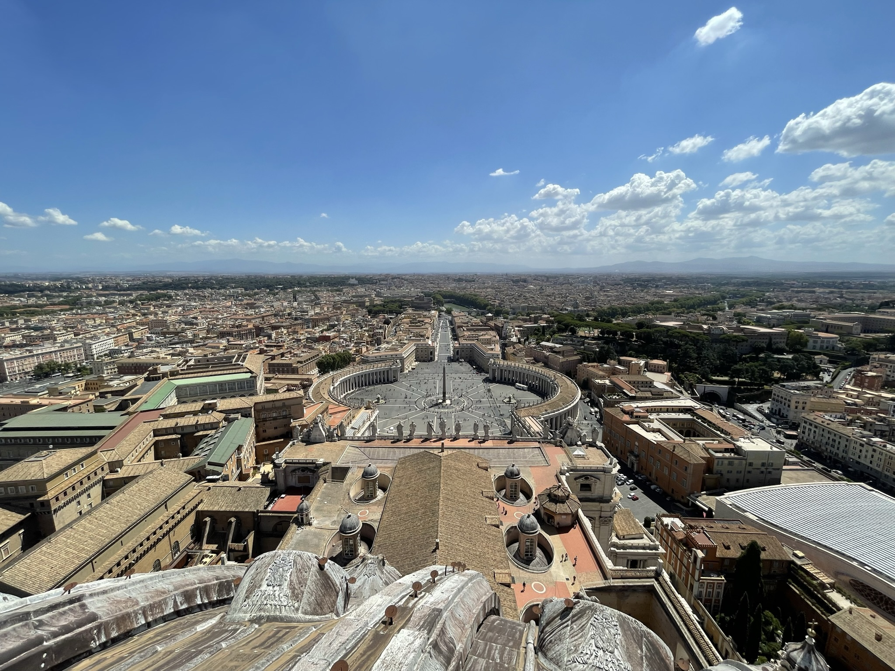
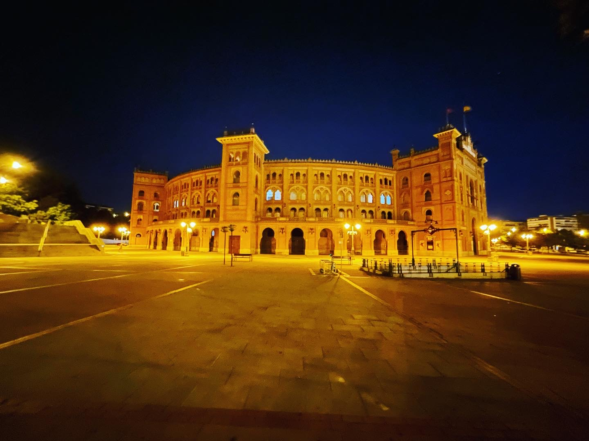

La Catedral de Nápoles (del italiano: Duomo di Napoli o Cattedrale metropolitana di Santa Maria Assunta) es el principal edificio de culto de Nápoles. Asume una importancia central en el plano histórico, pues, probablemente, en la antigüedad, en su sitio se erguía un templo dedicado al dios Apolo. La primera catedral fue construida por Constantino en el siglo iv. La catedral actual fue levantada por la casa de Anjou. Alberga el baptisterio más antiguo de Occidente

La basílica papal de San Pedro (en latín: Basilica Sancti Petri; en italiano: Basilica Papale di San Pietro), conocida comúnmente como basílica de San Pedro, es un templo católico situado en la Ciudad del Vaticano. La basílica de San Pedro es una de las cuatro basílicas papales o basílicas mayores de Roma; las otras son la archibasílica de San Juan de Letrán, la basílica de Santa María la Mayor y la basílica de San Pablo Extramuros.

La iglesia de san Nicolò da Tolentino, normalmente conocida como los Tolentini, es un templo católico en Venecia, norte de Italia, sede de la orden de los teatinos en la ciudad. Los teatinos llegaron a Venecia en 1527 después del Saco de Roma. La iglesia, dedicada a san Nicolás de Tolentino, fue comenzada en 1590 por Vincenzo Scamozzi y acabada finalmente en 1714. Es una gran iglesia con enormes pórticos corintios exentos, única de esta clase en Venecia, diseñados por Andrea Tirali. Hoy en día es una parroquia dependiente del vicariado de San Polo-Santa Croce-Dorsoduro.
la Iglesia de Santa María Magdalena se encuentra en Camisano Vicentino es un municipio italiano de 9.520 habitantes de la provincia de Vicenza (región de Véneto), era visitada en sus inicios de consagración por San Cayetano para estar en oracion con Dios, aqui mismo San cayetano celebraba misas todos los dias